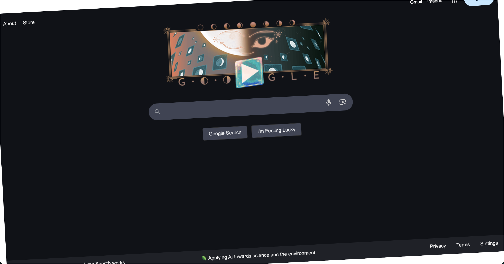
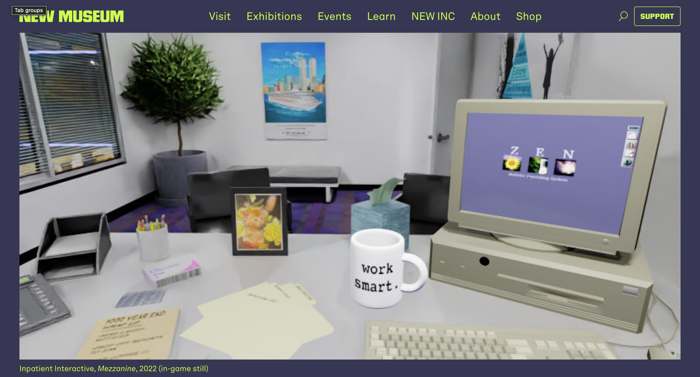
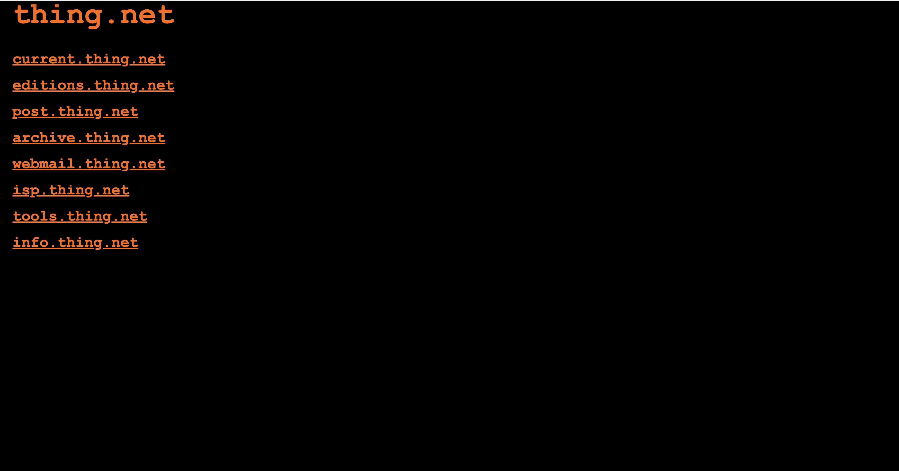

This exhibition, “Traveling through the works of old arts”, brings together three pieces of net art that take place within a similar time period with specific meanings behind each individual piece of art. For instance, “First Look: ‘Mezzanine’” was created in 2022 but the the computer game setting takes place during the late 1990s where the office is infested with the y2k bug and its effect on startups. Www.thing.net was also created in the 1990s, but it is an ongoing work that has multiple collaborative efforts on it. Lastly, “The Revolving Internet” is a net art created in 2010, and although it does not take place in the 1990s like the other two sources, I connected this art to the others because google or the internet is the basis of how an individual would even reach the other two arts; so in a sense this net art does connect to the other net arts.
The Revolving Internet by Constant Dullaart (2010)

"The Revolving Internet" was made by Constant Dullaart in 2010. This art took the iconic Google search page and made it spin around on the screen endlessly. The constant revolving of google is supposed to represent how google revolves around some people's lives.
First Look: "Mezzanine" (2022)

Mezzanine (2022) is a computer game that takes place in a chaotic office during the late 1990s dotcom boom. The game uses the interactivity in order to tell a story which critiques the era it takes place in.
www.thing.net by Wolfgang Staehle (1991)

Thing.net is a website that was initially launched the author Wolfgang Staehle, but since then it has evolved into something greater. This website has multiple collaborative works such as a work that was published with a 62-page document writing about the 2020 pandemic.